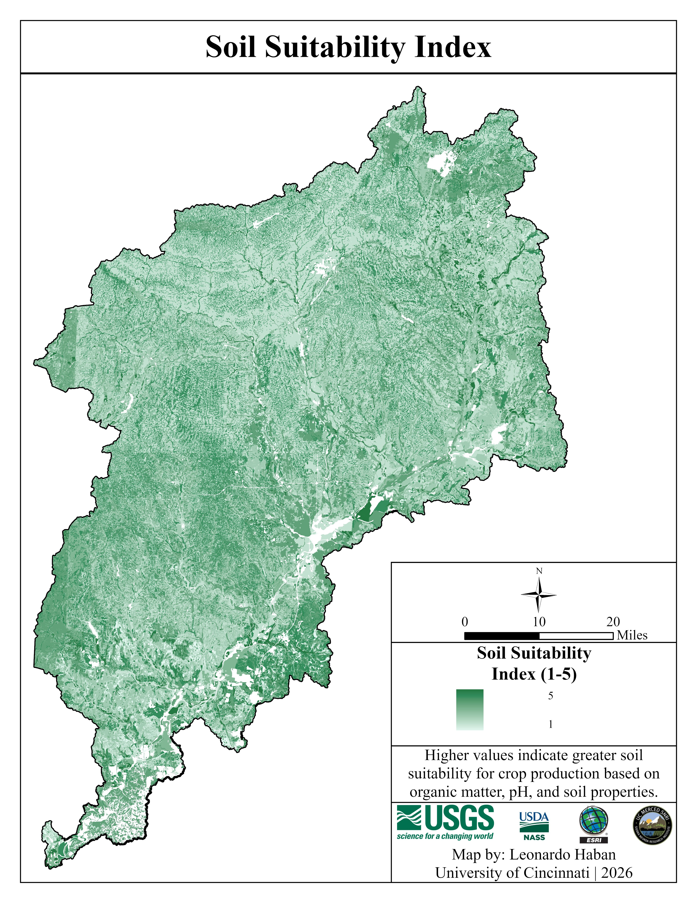
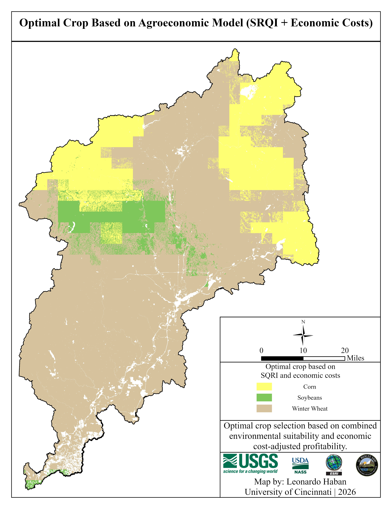
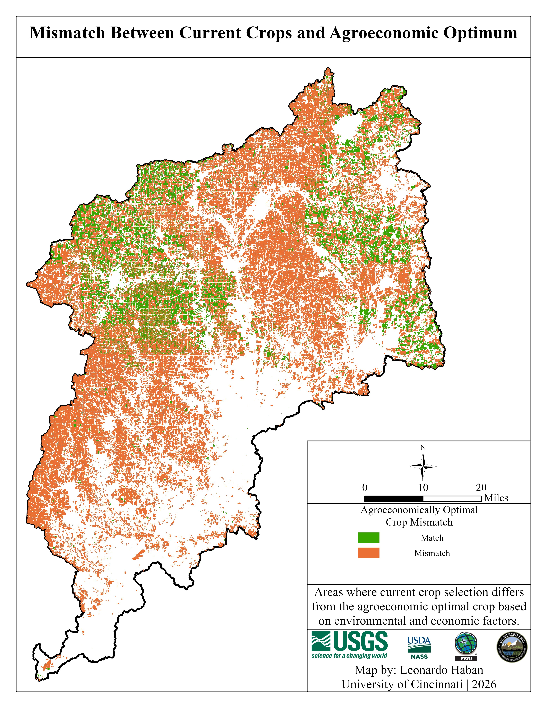

Spatial Optimization vs. Constraints
An agroeconomic crop suitability analysis of the Great Miami River Basin, balancing theoretical optimization with practical limitations.
The Problem: Beyond Biophysical Evaluation
Traditional land evaluation approaches have leaned heavily on single-variable or purely biophysical assessments—isolated soil indices or generalized climate envelopes—to decide where crops should go. However, real agricultural systems are shaped simultaneously by environmental capacity, commodity markets, and extensive structural pressures.
This project evaluates how corn, soybeans, and winter wheat might be spatially allocated across the Great Miami River Basin. The analysis transitions from a purely environmental framework, anchored by a Soil Suitability Index (SSI), toward an integrated agroeconomic approach (AgEcon).

Geospatial Modeling Framework
The GIS Agroeconomic Crop Suitability Model was standardized to a 30-meter spatial resolution, aligning the primary soil grid datasets with the USDA Cropland Data Layer (CDL). To introduce financial realism, I calculated resource burden layers, including Net Water Demand (NWD).
By integrating revenue metrics with a spatial cost penalty reflecting these resource burdens, the final AgEcon model combined environmental carrying capacity and net profitability at equal weight.

Spatial Mismatch Analysis
To stress-test the theoretical models, outputs were compared directly against the empirical USDA CDL. The purely environmental SSI model matched observed conditions in only 9.7% of the study area, a mismatch rate of 90.3%.
Applying the AgEcon model improved the match, but still resulted in an 81.6% spatial mismatch. This proves that farm-level decisions are not driven by pixel-level suitability optimization, but rather by structural constraints like subsurface tile drainage, federal crop insurance risk aversion, and technological lock-in.
